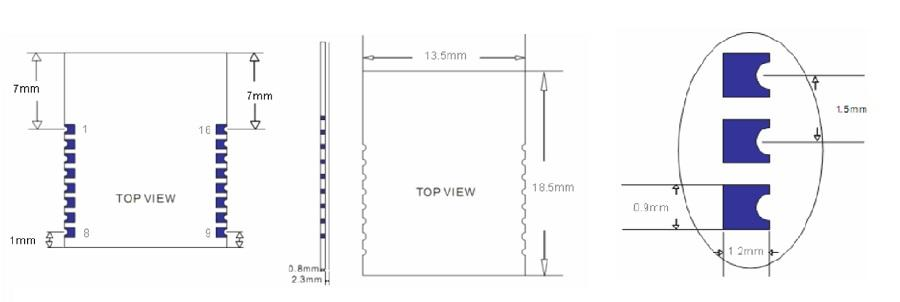
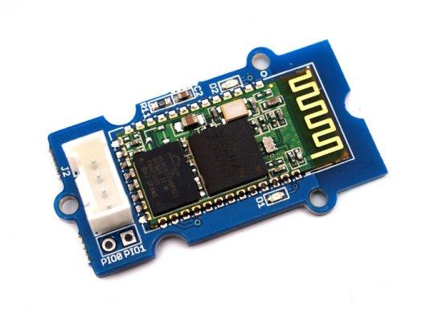
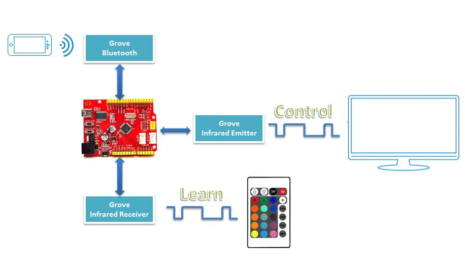

This is a SMD BLE module used in our BLE Bee and Xadow BLE. It is based on TI cc2541 chip, enables robust network nodes to be built with low total bill-of-material costs and highly suited for ultralow power consumption systems. The module is small and easy to use, with the preprogrammed firmware of manufacturer, you could quickly build BLE communications via its AT command. Supporting BLE communications with iphone, ipad and Android 4.3.
| Specification | Value |
|---|---|
| Microprocessor | CC2541 |
| Resources | Support the AT command, the user can according to need to change the role (master, slave mode) and the serial port baud rate,name of equipment,Matching parameters such as password, the use of flexible. |
| Outline Dimension | 13.5mm x 18.5mm x 2.3mm |
| Power supply | 3.3V |
| Communication Protocol | Uart(3.3V LVTTL) |
| IO counts | 2 |
| Key input IO | 1 |
| LED Indicators IO | 1 |
| Connectivity | Socket compatible with XBee |
| Specification | Min | Typ | Max | Unit |
|---|---|---|---|---|
| Max Input Voltage | -0.3 | 3.6 | V | |
| Working Input Voltage | 2.0 | 3.3 | 3.6 | V |
| Transmit Current | 15 | mA | ||
| Receive Current | 8.5 | mA | ||
| Deep Sleep Current | 600 | uA | ||
| Operating Temperature | -40 | +65 | °C |

| Pin | Name | Description |
|---|---|---|
| 1 | UART_RTS | UART |
| 2 | UART_TX | UART |
| 3 | UART_CTS | UART |
| 4 | UART_RX | UART |
| 5 | NC | |
| 6 | NC | |
| 7 | NV | |
| 8 | NV | |
| 9 | VCC | Power supply 3.3V |
| 10 | NC | |
| 11 | RESETB | Reset, active low at least in 5ms |
| 12 | GND | GND |
| 13 | PIO3 | IO port, used for connect to DHT11/DS18B20 |
| 14 | PIO2 | Digital input, output |
| 15 | PIO1 | LED indicator |
| 16 | PIO0 | Button pin |
1） Query the native MAC address
Send: AT + ADDR?
Send after a successful return: OK + LADD: MAC address (address for 12 string)
2） Query the baud rate
Send: AT+BAUD?
Send after a successful return: OK + Get: [para1]
Scope of para1:0 ~ 8. The parameters corresponding to: 0 represents 9600, 1, 2, 9600, 38400, on behalf of the representative representative of 57600, 115200, 5, 4800, 6, 7 represents 1200, 1200 2400. The default baud rate to 9600.
3） Set the baud rate
Send: AT+BAUD[para1]
Send after a successful return: OK+Set:[para1]
Example: send: AT + BAUD1, return: OK + Set: 2.The baud rate is set to 19200.
Note: after the switch to the 1200, module will no longer support the configurations of the AT command, and press the PIO0 under standby, module can restore the factory Settings.Do not recommend using the baud rate.After setting the baud rate, modules should be on electricity, anew set parameters can take effect.
4） from the device connected to the bluetooth address specified
Send: AT+CON[para1]
Send after a successful return: OK+CONN[para2]
Para2 range is: A, E, F
Example: from the bluetooth address is: 0017EA0943AE, sending the AT + CON0017EA0943AE, module returns: OK + CONNA or OK + + CONNF CONNE or OK.
5） removal equipment matching information
Send: AT + CLEAR
Send after a successful return: OK + CLEAR
Clear success had connected device address code information.
6） query module working mode
Send: AT + MODE?
Send after a successful return: OK + Get: [para]
Para: the range of 0 ~ 2. 0 represents passthrough mode, on behalf of the PIO acquisition + remote control + 1 passthrough, 2 representative passthrough + remote control mode.The default is 0.
7） set module working mode:
Send: AT + MODE []
Send after a successful return: OK + Set: [para]
8） query device name
Send: AT + NAME?
Send after a successful return: OK + NAME [para1]
9） set the device name
Send: AT + NAME [para1]
Send after a successful return: OK + Set: [para1]
Example: Set the device name to Seeed, sending the AT + NAMESeeed, return OK + Set: Seeed AT this time, the name of the bluetooth module has been changed to Seeed.
Note: after the instruction execution, required to electricity, set the parameters of the approval.
10） query matching password
Send: AT + PASS?
Send after a successful return: OK + PASS: [para1]
Para1 range is 000000 ~ 999999, the default is 000000.
11） pairing set password
Send the AT + PASS [para1]
Send after a successful return: OK + Set: [para1]
12） restore factory Settings
The AT + RENEW send
Send after a successful return: OK + RENEW
Restore the default factory Settings module, the module Settings will be reset so, back to the factory with the status of the factory default, delay module 500 ms after the restart.If no need, please be careful.
13） module reset
Send: AT + RESET
Send after a successful return: OK + RESET
After the instruction execution module will delay 500 ms after the restart.
14） set the master-slave mode
Send: AT + ROLE [para1]
Send after a successful return: OK + Set: [para1]
//master
/*
This example code is in the public domain.
*/
#include <SoftwareSerial.h>
SoftwareSerial mySerial(2, 3); // RX, TX
void setup()
{
// Open serial communications and wait for port to open:
Serial.begin(9600);
while (!Serial) {
; // wait for serial port to connect. Needed for Leonardo only
}
Serial.println("Goodnight moon!");
// set the data rate for the SoftwareSerial port
mySerial.begin(9600);
// set master
mySerial.print("AT+ROLE1");
delay(10000);
}
void loop() // run over and over
{
// set the data rate for the SoftwareSerial port
mySerial.print("test I am master ");
delay(10000);
if (mySerial.available())
Serial.write(mySerial.read());
if (Serial.available())
mySerial.write(Serial.read());
}
//slave
/*
This example code is in the public domain.
*/
#include <SoftwareSerial.h>
SoftwareSerial mySerial(2, 3); // RX, TX
void setup()
{
// Open serial communications and wait for port to open:
Serial.begin(9600);
while (!Serial) {
; // wait for serial port to connect. Needed for Leonardo only
}
Serial.println("Goodnight moon!");
// set the data rate for the SoftwareSerial port
mySerial.begin(9600);
// set slave
mySerial.print("AT+ROLE0");
delay(10000);
}
void loop() // run over and over
{
// set the data rate for the SoftwareSerial port
mySerial.print("test I am slave ");
delay(10000);
if (mySerial.available())
Serial.write(mySerial.read());
if (Serial.available())
mySerial.write(Serial.read());
}

Serial Bluetooth is designed for transparent wireless serial connection setup.
Serial port Bluetooth module is fully qualified Bluetooth V2.0+EDR(Enhanced Data Rate) 3Mbps Modulation with complete 2.4GHz radio transceiver and baseband.
It uses CSR Bluecore 04-External single chip Bluetooth system with CMOS technology and with AFH (Adaptive Frequency Hopping Feature).

This project uses Grove - Water Sensor to create a simple but effective solution to watering plants.
With this demo, we can:
I want to make it.
More Awesome Projects by Bluetooth